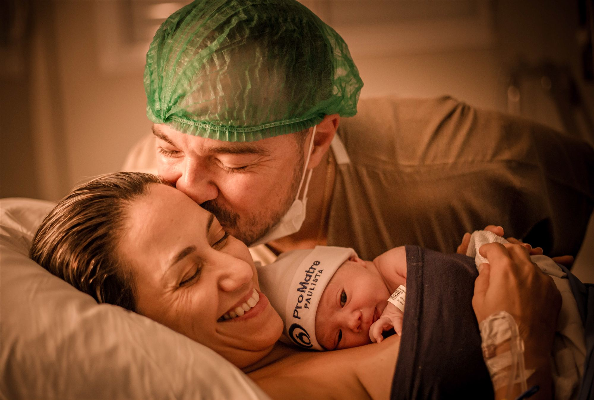
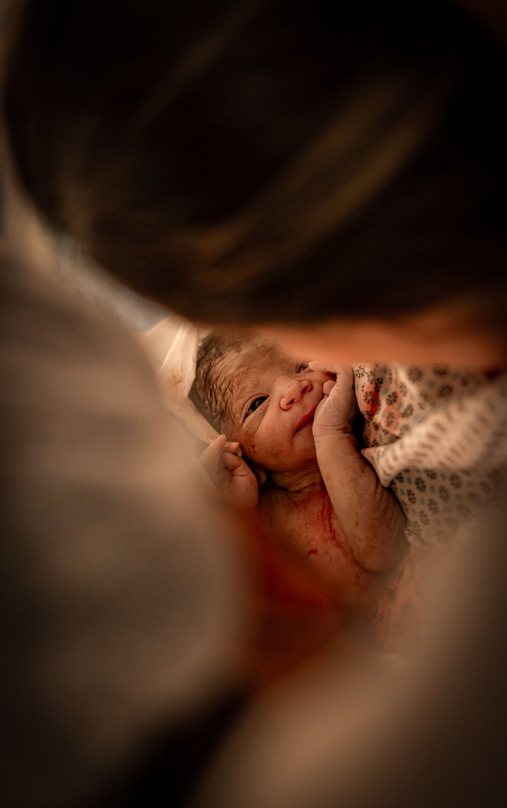
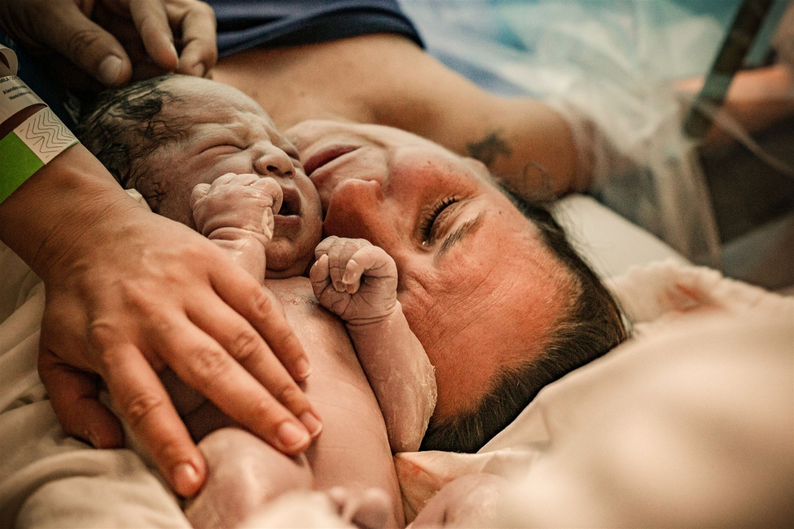
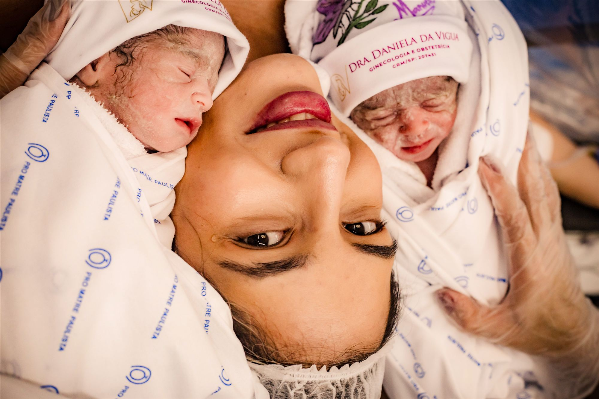
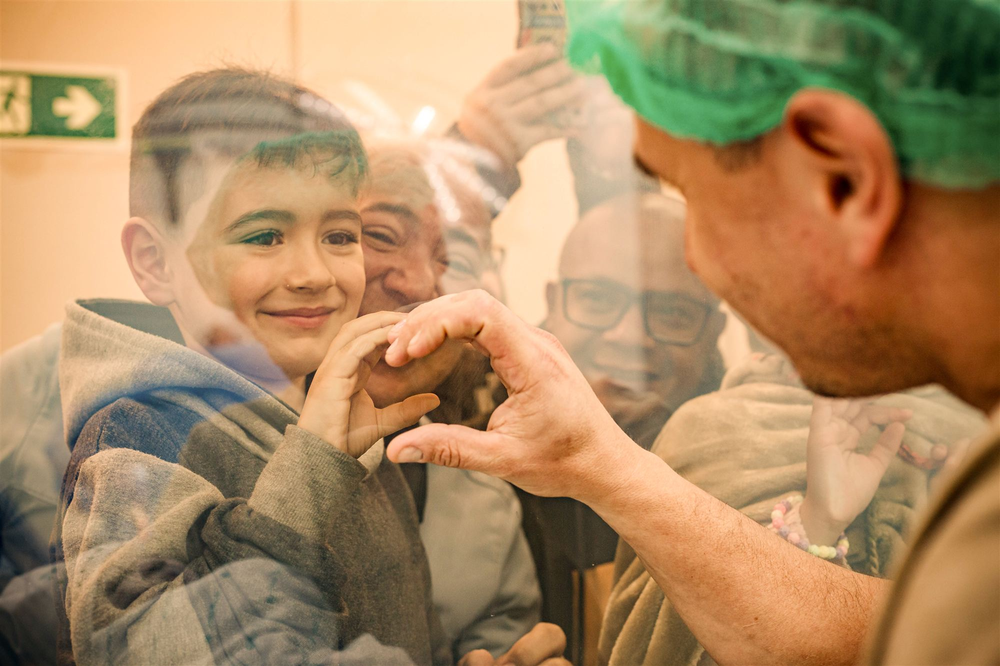
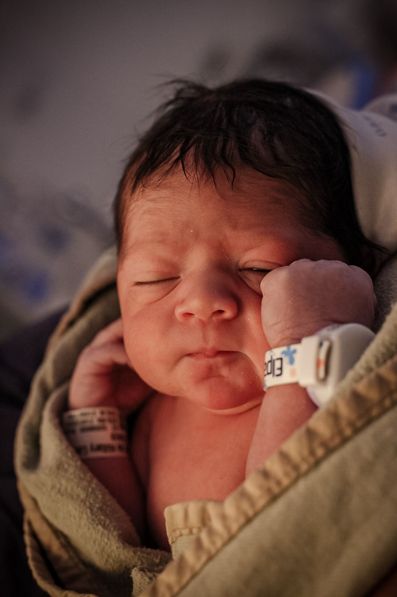
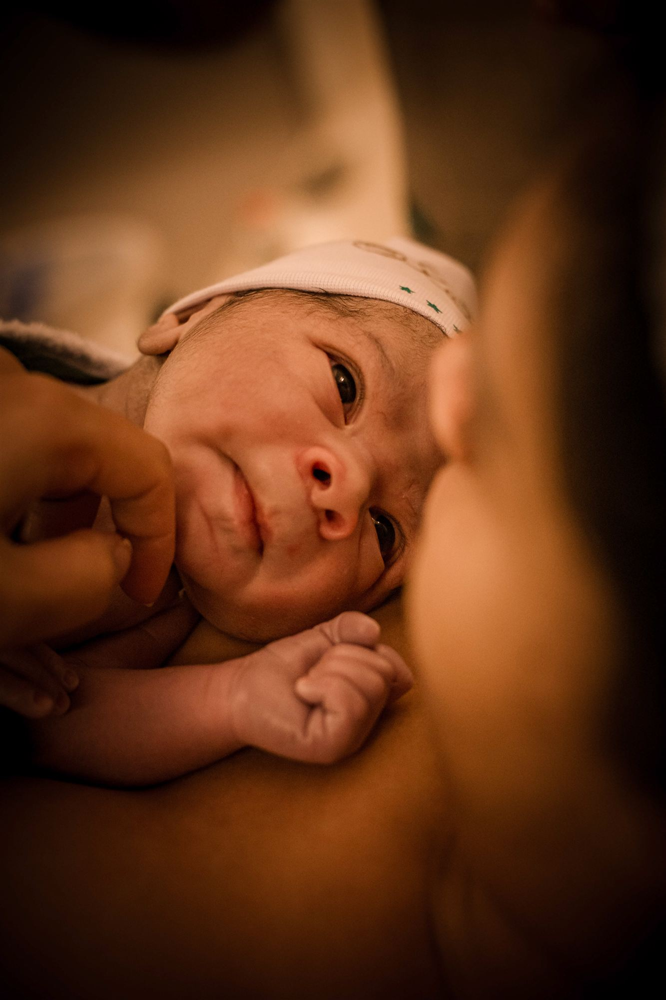

Nascimento
Coleção Nascimento
O registro completo do nascimento do seu bebê.
- Cobertura completa, parto normal ou cesárea
- Sobreaviso 24/7 a partir de 37 semanas
- Golden hour, pele com pele
- Prévia em até 48 horas
- Galeria privada em alta resolução

Parto em Foco · Fotografia documental · São Paulo
O primeiro olhar, o alívio do choro, a lágrima que escorre sem aviso. Registros silenciosos e eternos, para você reviver o nascimento do seu bebê exatamente como sentiu.
Olhar documental
Cada nascimento tem a sua própria pulsação. Aqui não existe “olhe para a câmera” nem sorriso ensaiado. Existe a força da mulher, o apoio do parceiro e a magia silenciosa do primeiro suspiro no mundo.






O pai no parto
No momento mais intenso da chegada do seu filho, você vai precisar da mão dele segurando a sua, da respiração compassada e da presença dele, de corpo e alma.
Por trás das lentes
Sou mãe, fotógrafa documental e apaixonada pela intensidade do nascimento. Acompanho famílias nas maternidades de São Paulo com uma convicção: a forma como um bebê chega ao mundo reverbera por toda a sua existência.
Presença invisível
Silenciosa na sala de parto ou no centro cirúrgico, sem atrapalhar a equipe.
Olhar de mãe
Compreensão real dos medos e da emoção de cada segundo.
Rigor hospitalar
Cumprimento das normas de cada maternidade.
27 milseguidores no Instagram · centenas de partos acolhidos em São Paulo
Como funciona
Conversamos sobre o hospital, suas expectativas, desejos de privacidade e as orientações da sua equipe médica.
A partir de 37 semanas, fico em prontidão. Às 14h de uma terça ou às 3h de um feriado, estou pronta para ir.
Acompanho o trabalho de parto, o nascimento, as primeiras avaliações e o contato pele com pele, sem pressa.
Você recebe uma prévia tratada com carinho para anunciar a chegada e celebrar com a família.
Coleções de memórias
Nascimento
O registro completo do nascimento do seu bebê.
Gestantes
A poesia e a conexão da gravidez, de forma leve e sem clichês.
Experiência completa
Da espera aos primeiros dias com o bebê.
Histórias de famílias
“A Fran foi um anjo no meu parto. Nem percebemos que ela estava fotografando, de tão discreta. Quando as fotos chegaram, chorei tudo de novo.”
“Eu achava que foto de celular bastava, mas meu marido me convenceu a chamar a Fran. Foi a melhor decisão de todo o nosso enxoval.”
“Fiquei muito tranquila sabendo que ela estava lá, registrando tudo com delicadeza e respeito absoluto.”
Dúvidas frequentes
O sobreaviso a partir da 37ª semana é ininterrupto, 24 horas por dia, 7 dias por semana. Os bebês escolhem a hora deles, e eu estou pronta para sair a qualquer momento.
Sim. Atendo partos normais e cesáreas planejadas ou intraparto. Nas cesáreas, atuo devidamente paramentada dentro do centro cirúrgico.
Já tenho documentação regularizada nas principais maternidades de São Paulo. Oriento você em todo o trâmite, para que não precise se preocupar com burocracia.
Nunca de forma invasiva. Uso lentes claras e câmeras de alta sensibilidade à luz, para captar a atmosfera suave da sala de parto sem assustar o bebê nem incomodar a equipe médica.
Como atendo um número limitado de partos por mês, para nunca haver sobreposição de datas, o ideal é reservar entre a 16ª e a 28ª semana de gestação.
Reserve a sua data
Conte para a Fran a data provável do parto e receba, direto no WhatsApp, a disponibilidade e os próximos passos.
Consultar disponibilidade